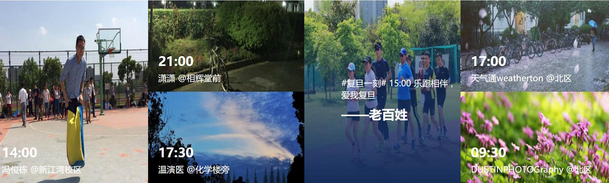

-
学院拥有一支结构合理、具有较高学术水平与研究能力的学科梯队，现有教职工140余人，专任教师110余人，其中博士生导师16人、教授32人(其中特聘 教授4人)、副教授40人、具有博士学位教师89人、硕士学位教师21人。学院拥有共享院士1人（杭州电子科技大学计算机学院名誉院长），中组部国家“千 人计划”引进人才1人，教育部“新世纪优秀人才支持计划”1人，浙江省高等学校“钱江高级人才”（特聘教授）2人，浙江省“百人计划”1人，浙江省千人计 划1人，浙江省中青年突出贡献专家1人，教育部“优秀青年教师资助计划”1人，浙江省“151人才工程”一层次4人，二层次2人,三层次10人，浙江省中 青年学科带头人7人，浙江省教学名师1人、浙江省优秀教育工作者1人，“浙江省功勋教师1人。现在读本科生2500余人，研究生400余人。其次原软件学院也拥有一流的软、硬件教学设施，师资力量雄厚，师资结构合理，具备一支由专业讲师、职业培训师、IT应用工程师以及与国内外著名IT企业合作的外聘教师队伍。学院现有浙江省“151人才工程”一层次1人，博士生导师、硕士生导师20余人，浙江省教学名师、浙江省中青年学科带头人、浙江省教坛新秀、微软金牌讲师多人。 团队建设
-
3D产业关键技术浙江省重点科技创新团队
杭州电子科技大学3D产业关键技术创新团队(编号：2011R50009)获浙江省重点科技创新团队资助，是浙江省第3批50个重点创新团队之一。该团队 由杭州电子科技大学牵头，澜起科技杭州分公司、杭州立体世界摄影器材有限公司、杭州百翔科技有限公司三家单位参与共建，团队负责人戴国骏教授，国家自然科 学基金评审专家及国家973前期研究项目主持人，浙江省“151人才工程”第一层次，在感知计算、多媒体传感网络等领域具有很高的学术造诣和知名度。团队 主要成员23名，团队以发展具有自主知识产权的3D产业关键技术，推动我省新一代信息产业的跨越式发展为目标，进行多层次的3D产业共性关键技术研究及其 应用推广，最终形成自主创新的三维信息采集-处理-传输-显示的共性关键技术群和应用示范工程。 近年来，团队成员承担了多项科研项目，已主持了国家973项目2项，国家自然科学基金重点项目2项，国家自然科学基金4项，浙江省自然科学基金重点项目1 项，浙江省自然科学基金项目6项, 获得浙江省科技进步二等奖（排名第一）1项，浙江省科技进步三等奖（排名第一）3项。
《面向行业的嵌入式关键技术研究》浙江省重点科技创新团队
2011年，杭州电子科技大学嵌入式关键技术创新团队(编 号：2010R50008)获浙江省重点科技创新团队资助，是浙江省第2批50个重点创新团队之一。该团队由杭州电子科技大学牵头，中国船舶重工集团公司 第七一五研究所、浙江省现代纺织工业研究院、浙江中控电气技术有限公司、浙江海康集团有限公司和浙江省电子产品检验所等5家单位参与，团队带头人为享受政 府特殊津贴专家、浙江省具有中青年突出贡献专家、浙江省“151”人才（重点资助）第一层次、浙江省块状经济装备制造业专家组首席专家严义教授，团队主要 成员36人。团队以嵌入式平台设计开发技术、复杂并行事件的可重组超高速处理技术和嵌入式系统的优化设计技术为主要研究方向，以仪器仪表与传感器、汽车电 子、数控系统和纺织机械等行业的嵌入式应用研究为主要的应用方向。 近年来，团队成员承担了多项科研项目，主持中国国家自然科学基金项目3项，参与国家863计划项目子课题2项；主持省自然科学基金项目3项，参于省重大专 项项目3项，省公益项目2项，杭州市重大创新项目1项。研究成果获浙江省科学技术奖二等奖1项，拥有国家发明专利6项，申请国家发明专利14项，发表EI 论文23篇。
国家级计算机基础课程教学团队
团队负责全校非计算机专业公共计算机课程与计算机类专业核心基础课程的教学工作。现 有教师22人，其中教授7名、副教授11名、讲师4名，博士8名，是一支业务素质较高、敬业精神强、热爱基础教学工作的教学队伍。长期以来，致力于为学生 提供优质的计算机基础课程教学服务。 团队由胡维华教授组建于1994年。带头人胡维华教授从事计算机教学与研究工作32 年，先后主讲《计算机组成原理》、《计算机体系结构》、《计算机外部设备》、《计算机网络》、《软件工程》、《大学计算机基础》、《VFP程序设计》、 《VB程序设计》、《TCP/IP协议分析》等课程，教学效果良好。勇于计算机教学领域的改革与创新，主持的教改项目先后获得国家级教学成果二等奖一项、 浙江省教学成果一等奖4项。胡维华教授是教育部本科教学工作水平评估专家、教育部计算机教学指导委员会成员、浙江省计算机教学指导委员会副主任委员、浙江 省高校教学工作督查委员会专家、浙江省计算机等级考试专家组组长，筹建并长期担任浙江省计算机教学研究会副理事长兼秘书长，获浙江省优秀教育工作者荣誉称 号，享受国务院政府特殊津贴。
传感器网络浙江省重点创新团队
2009年，杭州电子科技大学传感器网络创新团队获浙江省首批重点创新团队资助，是 浙江省首批50个重点创新团队之一。该团队由杭州电子科技大学牵头，香港科技大学、浙江林学院、浙江水利水电专科学校，浙江维思无线网络技术有限公司参 与，团队带头人为国家自然科学基金海外杰出青年基金获得者、浙江省首批“百人计划”获得者李向阳教授。团队以传感器网络、RFID、无线自组织网络为主要 研究方向。 近年来，团队成员承担了多项科研项目，主持中国国家自然科学基金海外杰出青年项目1 项、面上及青年基金项目4项，参与国家973计划项目子课题1项；主持美国国家自然科学基金项目2项，参与香港研究资助局项目3项；主持浙江省自然科学基 金重点项目1项、面上项目2项，部分项目如表1所示。研究成果获浙江省科学技术奖二等奖2项、三等奖3项，拥有国家发明专利5项。
-
中国工程院院士
倪光南（杭州电子科技大学计算机学院名誉院长）中组部国家“千人计划”引进人才
2009年 任永坚教育部“新世纪优秀人才支持计划”
2013年 俞 俊
浙江省中青年突出贡献专家
2009年 严 义浙江省“百人计划”、 浙江省“千人计划”
2011年 胡三清 李建军浙江省特聘教授
2010年 胡三清 2012年 李建军浙江省“151人才工程”入选人员
1996年 “151”第一层次： 郑 宁
2006年 “151”第一层次： 严 义 王小华
2008年 “151”重点资助： 严 义
2008年 “151”第二层次： 胡 华 戴国骏
2005年 “151”第三层次： 赵乃良 王毅刚
2007年 “151”第三层次： 吴 铤 徐小良 李 黎 徐 明 赵辽英
2009年 “151”第三层次： 俞东进 陈小雕 姜 明 胡海洋2011年 “151“第三层次： 吴 卿
2012年 “151”第一层次： 胡三清
2013年 “151”第三层次：徐 岗浙江省高校中青年学科带头人
2002年 万 健 王小华 郑 宁 严 义
2007年 戴国俊 王毅刚 包 健
2013年 李 黎、徐 明：教育部优秀青年教师资助计划
2000年 郑 宁：国家级留学人员科研活动择优资助项目
2007年 余正生：浙江省教学名师
2006年 包 健浙江省功勋教师
2010年 包 健浙江省优秀教育工作者
2004年 胡维华浙江省高校优秀留学回国人员
2008年 胡 华浙江省海外留学英才奖
2006年 王毅刚 余正生享受政府特殊津贴人员:胡维华 郑 宁 严 义
其他
郑 宁 男 1961年11月出生 硕士 研究员 计算机应用技术、计算机软件与理论和信息安全的博士生导师
胡 华 男 1964年11月出生 博士 教授 硕士生导师 现任杭州电子科技大学副校长
丁 宏 男 1963年7月出生 硕士 教授 硕士生导师 现任杭州电子科技大学软件工程学院院长
在外校兼任博士生导师
姓 名 兼职岗位 学科专业 兼职单位
胡三清 博士生导师 计算机应用技术 浙江大学
戴国骏 博士生导师 计算机应用技术 电子科技大学
万 健 博士生导师 计算机应用技术 宁波大学
胡 华 博士生导师 计算机应用技术 宁波大学
方景龙 博士生导师 计算机应用技术 宁波大学
郑 宁 博士生导师 计算机应用技术 西安电子科技大学 -

-
图形图像与虚拟现实技术在工业中的应用
开发的家具辅助设计与展示软件、在多家家具企业中应用，开发的工厂规划软件应用于多家企业的工厂规划仿真。
流量仪表智能化关键技术研究与产品化
主要产品“智能电磁流量计”、“智能涡街流量计”等产品由浙江迪元仪表有限公司生产，被广泛应用石化、化工、环保、轻纺、冶金、矿山、医药、造纸、给排水、食品、制糖、酿造等等工业领域和管理行业的能源计量、管理及生产装置监控中，并得到好评。产品累计产值已达1.3亿，累计税收已达1300万元。获得浙江省科学技术一等奖。
纺织品数码喷印系统
和宏华公司、浙江大学合作的纺织品数码喷印系统曾获国家技术发明二等奖，开创了我国高端纺织设备自主创新的先河，打破了高端纺织设备先引进后仿造的格局，促进了国内纺织产业结构的优化和节能减排，对提升我国纺织品附加值和纺织业国际竞争力有重要意义。
GreenOrbs
杭州电子科技大学参与，香港科技大学、清华大学、浙江农林大学等合作完成，是目前全世界规模最大的民用无线传感网系统。 哈佛大学教授Matt Welsh在EWSN2009会议的主题报告上评价 GreenOrbs系统是近年最具有代表性的传感网系统之一。
嵌入式图编程的软件开发平台CASS系统
提出了基于图编程的嵌入式系统的开发模式与方法，特别是研究解决了嵌入式图编程理论中的图编译、软件生成与优化、超高速嵌入式系统结构等问题，研究成果应用于嵌入式图编程的软件开发平台CASS系统中，并推广应用到上海电气、运达风电、和利时100多家大中型企业，引起了国际同行的重视。2011、2012工博会做特邀报告。
淘宝海量数据处理平台负载分析及性能优化
对淘宝海量数据平台的Map-Reduce作业进行负载分析，优化作业调度策略，提高资源使用利用率，减小运营成本。发表3篇国际会议论文，一篇获IISWC 2012 最佳论文奖。
OSNSolution系统
是由杭电云技术研究中心与杭州信核数据科技有限公司共同开发的智能数据存储和系统安全管理平台，提供高端存储应用、存储安全和存储管理的产品，2011年4月，通过了以倪光南院士为组长的成果鉴定组的评审，专家组一直认为，“系统支持大中型的企业级应用，实现对IBM、EMC等同类存储系统产品的进口替代”。